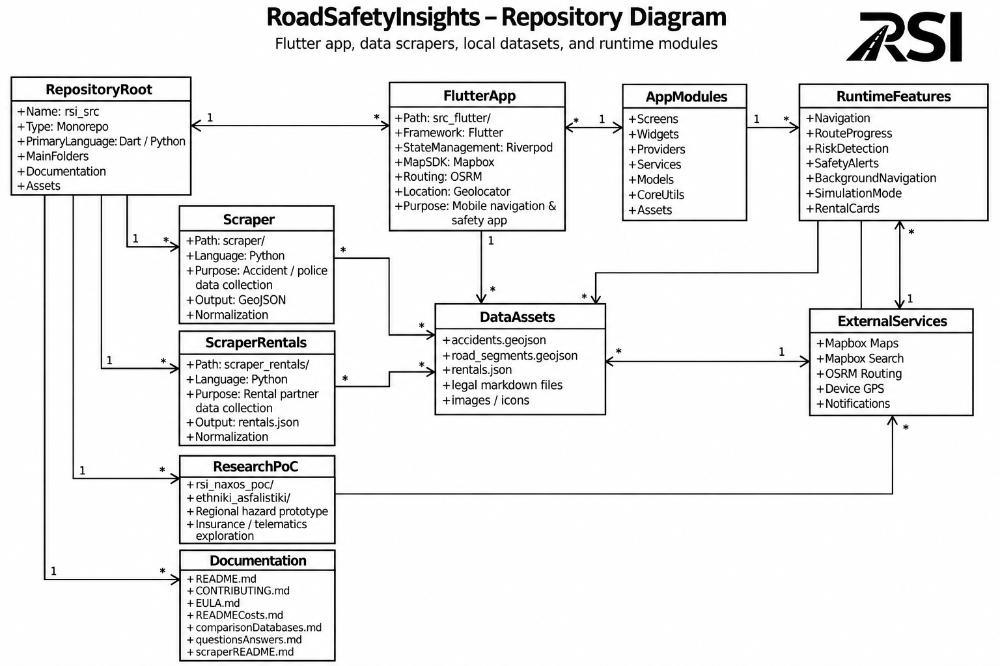

Χάρτης & Πλοήγηση
Διαδραστικός χάρτης, αναζήτηση προορισμού, route calculation και παρακολούθηση της διαδρομής με επίκεντρο την καθαρή εμπειρία του οδηγού.
Product Demo
Από την επισκόπηση επικίνδυνων σημείων μέχρι την πλοήγηση και τις προληπτικές ειδοποιήσεις, το demo παρουσιάζει τη βασική εμπειρία του οδηγού μέσα από το Android prototype.
Architecture
Μια συνοπτική εικόνα του repository, των δεδομένων, των υπηρεσιών και του runtime flow της εφαρμογής.

Inside the demo
Διαδραστικός χάρτης, αναζήτηση προορισμού, route calculation και παρακολούθηση της διαδρομής με επίκεντρο την καθαρή εμπειρία του οδηγού.
Accident και road-risk data αξιολογούνται σε σχέση με την ενεργή διαδρομή, ώστε το app να εμφανίζει προληπτικές ειδοποιήσεις πριν από relevant risk zones.
Το simulation mode επιτρέπει repeatable testing και παρουσιάσεις, ενώ η αρχιτεκτονική επεκτείνεται σε rental, fleet και insurance integrations.
RoadSafetyInsights